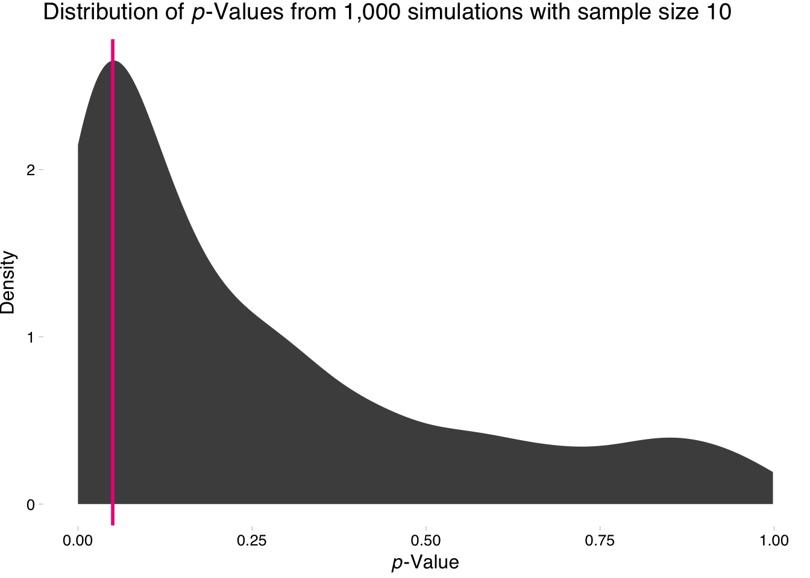
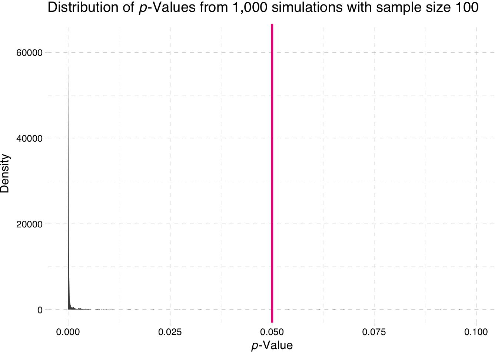
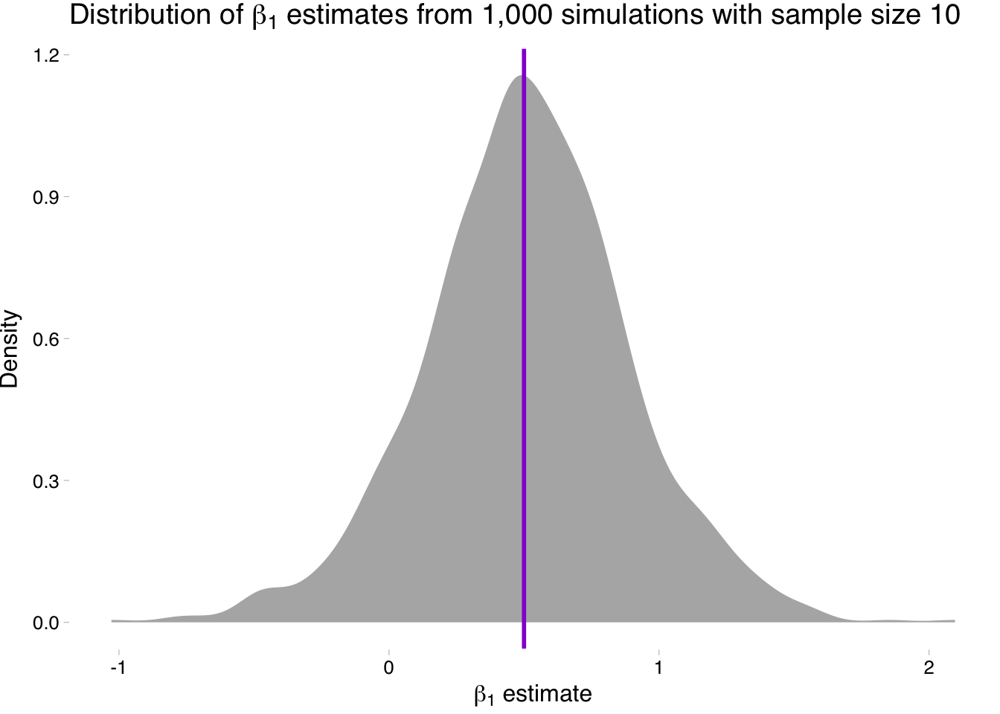
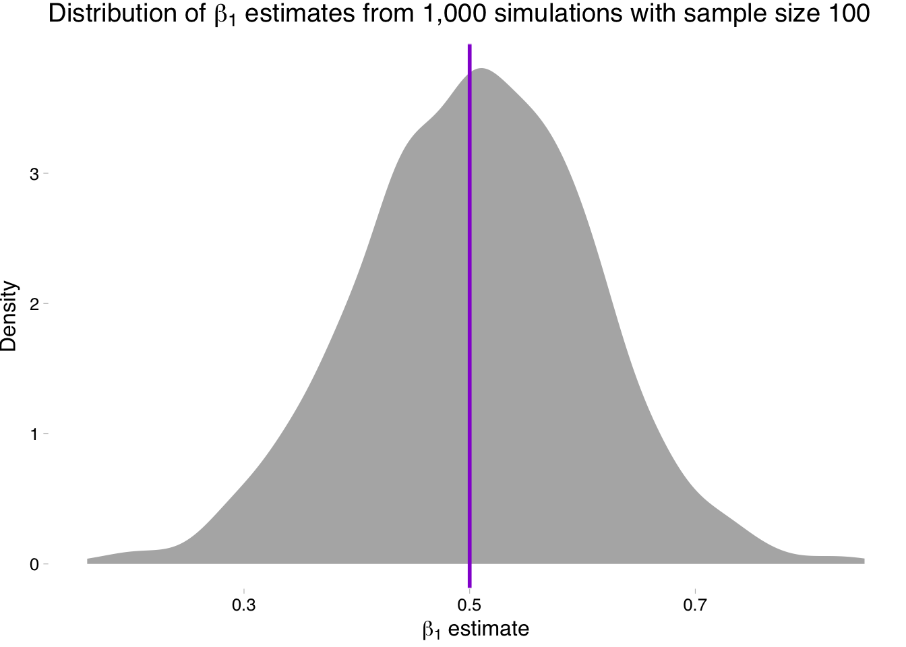

The Piazza page is now up. You can sign up here.1
Packages:
dplyr, lfe, readrmagrittr and parallel (parallel is likely already installed)Data: The auto.csv file.
Review: It will also be helpful if you review the simulations from section 3 and section 4.
In our previous section, we discussed logical operators, optional arguments to functions, the Frisch-Waugh-Lovell theorem (and its applications—omitted variable bias, bad controls), and R2/measures of fit.
Testing hypotheses in R! Plus simulation and parallelizing your code.
This week we will focus on statistically testing hypotheses in R, which generally takes the form of testing whether a point estimate (e.g., a coefficient) is significantly different from some value (generally, zero).
The topic of hypothesis testing is super important2 but perhaps a little overlooked. We spend a lot of time cleaning and pruning our data, demonstrating the unbiasedness (or consistency or other properties) of various estimators, discussing identification strategies3, and writing models, and we can easily forget the original point of the exercise. In econometrics, the original point of the exercise is often something like: is there evidence of meaningful relationship between the variables \(y\) and \(x\)? The point estimate from the regression of \(y\) on \(x\) doesn’t actually answer this question; it gives us a best guess at the slope of a line drawn between \(y\) and \(x\). Hypothesis testing (and calculating standard errors) will tell us about the evidence for a relationship between \(y\) and \(x\).
As we discussed before, I find it helpful to have a section of my R script where I set settings, load libraries, define directories, read data.
# Setup ----
# Settings
options(stringsAsFactors = F)
# Packages
library(dplyr)
library(lfe)
library(magrittr)
library(readr)
# Directories
setwd("/Users/edwardarubin/Dropbox/Teaching/ARE212/Section05")
# Load the dataset from CSV
cars <- read_csv("auto.csv")We should also load the functions that we will want to use:
# Functions ----
# Function to convert tibble, data.frame, or tbl_df to matrix
to_matrix <- function(the_df, vars) {
# Create a matrix from variables in var
new_mat <- the_df %>%
# Select the columns given in 'vars'
select_(.dots = vars) %>%
# Convert to matrix
as.matrix()
# Return 'new_mat'
return(new_mat)
}
# Function for OLS coefficient estimates
b_ols <- function(data, y_var, X_vars, intercept = TRUE) {
# Require the 'dplyr' package
require(dplyr)
# Create the y matrix
y <- to_matrix(the_df = data, vars = y_var)
# Create the X matrix
X <- to_matrix(the_df = data, vars = X_vars)
# If 'intercept' is TRUE, then add a column of ones
if (intercept == T) {
# Bind a column of ones to X
X <- cbind(1, X)
# Name the new column "intercept"
colnames(X) <- c("intercept", X_vars)
}
# Calculate beta hat
beta_hat <- solve(t(X) %*% X) %*% t(X) %*% y
# Return beta_hat
return(beta_hat)
}magrittrNotice that we loaded a new package called magrittr. We’ll talk about its functions shortly. magrittr offers is more flexibility for piping commands—similar to dplyr’s pipe %>%. Fun facts: the package’s name comes from the Belgian artist René Magritte. Specifically, the package is referencing Magritte’s painting “The Treachery of Images,” which shows a pipe and the caption “This is not a pipe.”
Before we get to the math, you should know that a Guinness brewer named William S. Gosset developed the t test to deal with the fact that his sample means did not act normally. More.
Okay. Now let’s math it up.
Suppose we want to test whether the jth coefficient \(\beta_j\) in our model is is significantly different from some other value \(\bar\gamma\), using the significance level \(\alpha\). Following Max’s notes, we can calculate the t statistic for the jth coefficient as
\[ t_j = \dfrac{b_j - \bar\gamma}{\sqrt{ s^2 \cdot \left\{ \left(\mathbf{X}^\prime\mathbf{X}\right)^{-1} \right\}_{jj} }} = \dfrac{b_j - \bar\gamma}{\text{se}\left(b_j\right)} \]
where \(b_j\) is our estimate for \(\beta_j\), \(s^2\) is our estimate of \(\sigma^2\), and \(\left\{ \left(\mathbf{X}^\prime\mathbf{X}\right)^{-1} \right\}_{jj}\) is the jth diagonal element of \(\left(\mathbf{X}^\prime\mathbf{X}\right)^{-1}\).
Now let’s write a function in R that will calculate this test statistic.
t_stat <- function(data, y_var, X_vars, gamma, intercept = T) {
# Turn data into matrices
y <- to_matrix(data, y_var)
X <- to_matrix(data, X_vars)
# Add intercept if requested
if (intercept == T) X <- cbind(1, X)
# Calculate n and k for degrees of freedom
n <- nrow(X)
k <- ncol(X)
# Estimate coefficients
b <- b_ols(data, y_var, X_vars, intercept)
# Calculate OLS residuals
e <- y - X %*% b
# Calculate s^2
s2 <- (t(e) %*% e) / (n-k)
# Inverse of X'X
XX_inv <- solve(t(X) %*% X)
# Standard error
se <- sqrt(s2 * diag(XX_inv))
# Vector of _t_ statistics
t_stats <- (b - gamma) / se
# Return the _t_ statistics
return(t_stats)
}You could probably write the same function in a single (long) line of code. However, it would be (1) ugly and (2) difficult to debug. I recommend some intermediate steps—even if you are using pipes.
Now let’s test drive our function t_stat() on our car data.4 Specifically, let’s regress price on an intercept, weight, and mpg and test the estimated coefficients against the null hypothesis that they are zero, i.e., \(\bar{\boldsymbol{\gamma}} = \left[0 \quad 0 \quad 0\right]^\prime\).
We should probably compare our calculated t statistics to the t statistics calculated by the function felm(). For this task, we will grab the coefficients from the summary() function5 after it is applied to felm(). To grab the coefficients from summary() we will use the %$% operator from magrittr.
%$%Officially, the %$% pipe is called the exposition pipe operator because it exposes the names of the left-hand-side object to the right-hand-side expression. More simply: %$% helps you avoid using too many $s. For example, if you want to find the correlation between price and weight, you could type cor(cars$price, cars$weight) or you could go with cars %$% cor(price, weight).
cor(cars$price, cars$weight)
## [1] 0.5386115
cars %$% cor(price, weight)
## [1] 0.5386115For more on the magrittr package, type vignette("magrittr") into your console. Vignettes are helpful summaries of packages. To see all of the vignettes available, type browseVignettes().
Okay, so let’s finally compare our function to felm()’s results.
First, our function:
t_stat(cars,
y_var = "price", X_vars = c("mpg", "weight"),
gamma = 0, intercept = T)## price
## intercept 0.5410180
## mpg -0.5746808
## weight 2.7232382And now the t statistics from felm()6
felm(price ~ mpg + weight, cars) %>%
summary() %$% (coefficients)[,3]## (Intercept) mpg weight
## 0.5410180 -0.5746808 2.7232382Huzzah! They match! But unless you have a table of t statistics stored in your head, you will want more than a vector of t statistics. We want p-values.
What do we need to do to turn our newly calculated t statistics into p-values? First off, we are going to stick with two-sided hypothesis tests where the null hypothesis is our parameter is zero.7 We need to find the percentage of the t distribution (with \(n-k\) degrees of freedom) that is more extreme than (the absolute value) of our test statistic. More formally, the p-value \(p\) for our jth t statistic \(t_j\) is defined as
\[ p = \text{Pr}\left( t_\text{df} > \left| t_j \right| \right) \times 2\]
Let’s code up the calculation of a p-value. We will make use of the function pt(q, df), which gives the distribution function for a t-distributed random variable evaluated at q with df degrees of freedom. In our situation, we will make use of pt()’s optional argument lower.tail. The lower.tail argument defaults to TRUE, which means pt() is evaluating the CDF at q. If we set the lower.tail argument to FALSE, then we will get one minus the CDF, which is what we want for the p-value.
Example
# The default: lower.tail = TRUE
pt(q = 2, df = 15)
## [1] 0.9680275
# Setting lower.tail = TRUE
pt(q = 2, df = 15, lower.tail = T)
## [1] 0.9680275
# Setting lower.tail = FALSE
pt(q = 2, df = 15, lower.tail = F)
## [1] 0.0319725This situation is a great example of how R plays very nicely with vectors. Imagine we have a vector of t statistics named t_stats. We can calculate the p-values associated with the t statistics via
pt(q = abs(t_stats), df = n-k, lower.tail = F) * 2Finally, let’s put together a nice-ish table like the one that felm() returns: coefficient estimates, standard errors, t statistics, and p-values. Because I’m so clever, we’ll call the function that performs this task ols().8 In addition, because many of our functions return matrices, we will use as.vector() to convert \(1\times k\) or \(k\times 1\) matrices to vectors. We will also use the round() function to maintain a reasonable number of digits.
ols <- function(data, y_var, X_vars, intercept = T) {
# Turn data into matrices
y <- to_matrix(data, y_var)
X <- to_matrix(data, X_vars)
# Add intercept if requested
if (intercept == T) X <- cbind(1, X)
# Calculate n and k for degrees of freedom
n <- nrow(X)
k <- ncol(X)
# Estimate coefficients
b <- b_ols(data, y_var, X_vars, intercept)
# Calculate OLS residuals
e <- y - X %*% b
# Calculate s^2
s2 <- (t(e) %*% e) / (n-k)
# Inverse of X'X
XX_inv <- solve(t(X) %*% X)
# Standard error
se <- sqrt(s2 * diag(XX_inv))
# Vector of _t_ statistics
t_stats <- (b - 0) / se
# Calculate the p-values
p_values = pt(q = abs(t_stats), df = n-k, lower.tail = F) * 2
# Nice table (data.frame) of results
results <- data.frame(
# The rows have the coef. names
effect = rownames(b),
# Estimated coefficients
coef = as.vector(b) %>% round(3),
# Standard errors
std_error = as.vector(se) %>% round(3),
# t statistics
t_stat = as.vector(t_stats) %>% round(3),
# p-values
p_value = as.vector(p_values) %>% round(4)
)
# Return the results
return(results)
}Finally, let’s test our function and compare it to the output of felm() and the coefficients it outputs in summary().
ols(data = cars,
y_var = "price",
X_vars = c("mpg", "weight"),
intercept = T)
## effect coef std_error t_stat p_value
## 1 intercept 1946.069 3597.050 0.541 0.5902
## 2 mpg -49.512 86.156 -0.575 0.5673
## 3 weight 1.747 0.641 2.723 0.0081felm(price ~ mpg + weight, cars) %>%
summary() %$% coefficients
## Estimate Std. Error t value Pr(>|t|)
## (Intercept) 1946.068668 3597.0495988 0.5410180 0.590188628
## mpg -49.512221 86.1560389 -0.5746808 0.567323727
## weight 1.746559 0.6413538 2.7232382 0.008129813Pretty cool, eh?
As Max has likely told you, there will be situations where you don’t care as much about testing the significance of individual coefficients as you care about testing joint significance. For example, is there evidence that either \(\beta_1\) or \(\beta_2\) differ significantly from zero? Enter the \(F\) test!9
Assume our data-generating process is
\[ \mathbf{y} = \beta_0 + \mathbf{x}_1 \beta_1 + \mathbf{x}_2 \beta_2 + \mathbf{x}_3 \beta_3 + \varepsilon \]
To test whether \(\beta_1\), \(\beta_2\), and \(\beta_3\) are jointly different from zero, we need two more objects: \(\mathbf{R}\) and \(\mathbf{r}\). \(\mathbf{R}\) is a \(j\times k\) matrix where \(j\) is the number of joint hypotheses we will test and \(k\) is the number of coefficients in our model (inclusive of the intercept). The \(\mathbf{R}\) matrix creates linear combinations of the coefficients for each of individual hypotheses that we will jointly test. The \(j\times 1\) vector \(\mathbf{r}\) gives the right-hand side of the hypotheses that we want to test.
For example, if we want to jointly test \(\beta_1 = 1\), \(\beta_2 = 0\) and \(\beta_3 = 7\), our matrices would be10
\[ \mathbf{R} = \left[ \begin{array}{cccc} 0 & 1 & 0 & 0 \\ 0 & 0 & 1 & 0 \\ 0 & 0 & 0 & 1 \\ \end{array} \right] \enspace \text{and} \enspace \mathbf{r} = \left[ \begin{array}{c} 1 \\ 0 \\ 7 \\ \end{array} \right] \]
If we want to jointly test that \(\beta_1\), \(\beta_2\), and \(\beta_3\) are jointly different from zero, the matrices become
\[ \mathbf{R} = \left[ \begin{array}{cccc} 0 & 1 & 0 & 0 \\ 0 & 0 & 1 & 0 \\ 0 & 0 & 0 & 1 \\ \end{array} \right] \enspace \text{and} \enspace \mathbf{r} = \left[ \begin{array}{c} 0 \\ 0 \\ 0 \\ \end{array} \right] \]
As you saw in lecture, you can write the statistic in the \(F\) test as
\[ F = \dfrac{(\mathbf{R}\mathbf{b}-\mathbf{r})^\prime \left[\mathbf{R}\left(\mathbf{X}^\prime \mathbf{X}\right)^{-1} \right] (\mathbf{R}\mathbf{b}-\mathbf{r}) / J}{s^2} = \dfrac{(\mathbf{R}\mathbf{b})^\prime \left[\mathbf{R}\left(\mathbf{X}^\prime \mathbf{X}\right)^{-1} \right] (\mathbf{R}\mathbf{b}) / J}{s^2} \]
where the equality comes from the special (though common) case of \(\mathbf{r} = \boldsymbol{0}\). In our case, \(J=3\) because we are jointly testing three hypotheses (also called imposing three restrictions).
Now we will write up a function that jointly tests all of the coefficients (except the intercept). Here, I will assume the joint hypotheses in which we are interested take the from \(\beta_i = 0\). You should feel free to write more complex functions that take an arbitrary \(\mathbf{R}\) and \(\mathbf{r}\). I’m also going to assume that we want an intercept.
joint_test <- function(data, y_var, X_vars) {
# Turn data into matrices
y <- to_matrix(data, y_var)
X <- to_matrix(data, X_vars)
# Add intercept
X <- cbind(1, X)
# Name the new column "intercept"
colnames(X) <- c("intercept", X_vars)
# Calculate n and k for degrees of freedom
n <- nrow(X)
k <- ncol(X)
# J is k-1
J <- k - 1
# Create the R matrix: bind a column of zeros
# onto a J-by-J identity matrix
R <- cbind(0, diag(J))
# Estimate coefficients
b <- b_ols(data, y_var, X_vars)
# Calculate OLS residuals
e <- y - X %*% b
# Calculate s^2
s2 <- (t(e) %*% e) / (n-k)
# Create the inner matrix R(X'X)^(-1)R'
RXXR <- R %*% solve(t(X) %*% X) %*% t(R)
# Calculate the F stat
f_stat <- t(R %*% b) %*% solve(RXXR) %*% (R %*% b) / J / s2
# Calculate the p-value
p_value <- pf(q = f_stat, df1 = J, df2 = n-k, lower.tail = F)
# Create a data.frame of the f stat. and p-value
results <- data.frame(
f_stat = f_stat %>% as.vector(),
p_value = p_value %>% as.vector())
return(results)
}Now run the \(F\) test jointly testing the significance of the coefficients on miles per gallon and weight (with the outcome variable price).
joint_test(data = cars,
y_var = "price", X_vars = c("mpg", "weight"))## f_stat p_value
## 1 14.73982 4.424878e-06Finally, let’s check if the our function matches felm()’s joint statistic and p-value.
felm(price ~ mpg + weight, cars) %>%
summary() %$% F.fstat## F df1 df2 p
## 1.473982e+01 2.000000e+00 7.100000e+01 4.424878e-06What if you want to incorporate this \(F\) statistic and joint test p-value in your ols() function? You might face a few challenges.
ols() function. Where would we put this new output from the \(F\) test? One option is to use a list: you could return a list where the first element is our nice results table and the second element is the information from our \(F\) test.ols() function allows the user to select whether or not to include an intercept, but we need an intercept for our \(F\) test. Solution: warning and error messages in R.For an extreme solution, you could write an if statement that checked whether the user specified intercept = F. If intercept is indeed FALSE, you could stop the function in its tracks and print the error message “No intercept!”. In code, this would look like
if (intercept == F) stop("No intercept!")However, this solution is a bit extreme: you will not be able to get your results for the other parts of your function if intercept = F. Instead, you might want to use the warning() function to warn the user that because she/he requested no intercept, you will not return an \(F\) statistic or joint p-value. Let’s do it.
Below is a function ols_joint() that returns a list of results and issues a warning if the user specifies no intercept.
ols_joint <- function(data, y_var, X_vars, intercept = T) {
# Run the ols() function
ols_results <- ols(data, y_var, X_vars, intercept)
# If intercept is T, run the joint_test() function
# Otherwise, define joint_results to be NA and
# issue a warning
if (intercept == T) {
joint_results <- joint_test(data, y_var, X_vars)
} else {
warning("No intercept: will not perform F test.")
joint_results <- data.frame(
f_stat = NA,
p_value = NA)
}
# Create the results list
results <- list(ols_results, joint_results)
# Return the results list
return(results)
}Now let’s see what happens when we include and exclude an intercept.
With an intercept:
ols_joint(data = cars,
y_var = "price",
X_vars = c("mpg", "weight"),
intercept = T)## [[1]]
## effect coef std_error t_stat p_value
## 1 intercept 1946.069 3597.050 0.541 0.5902
## 2 mpg -49.512 86.156 -0.575 0.5673
## 3 weight 1.747 0.641 2.723 0.0081
##
## [[2]]
## f_stat p_value
## 1 14.73982 4.424878e-06Without an intercept:
ols_joint(data = cars,
y_var = "price",
X_vars = c("mpg", "weight"),
intercept = F)## Warning in ols_joint(data = cars, y_var = "price", X_vars = c("mpg",
## "weight"), : No intercept: will not perform F test.## [[1]]
## effect coef std_error t_stat p_value
## 1 mpg -5.479 28.122 -0.195 0.8461
## 2 weight 2.076 0.199 10.431 0.0000
##
## [[2]]
## f_stat p_value
## 1 NA NAI think it’s time for a simulation. Let’s simulate the power (probability that we reject the null when the null is false) of a simple linear regression. We will also incorporate sample size into this simulation. First, let’s write a few functions.
The first function will generate data for the regression, given a sample size sample_size. As I mentioned above, we will stick with a simple linear regression
\[\mathbf{y} = \beta_0 + \beta_1 \mathbf{x} + \boldsymbol{\varepsilon}\]
Let’s assume \(\beta_0 = 7\) and \(\beta_1 = 0.5\). We will draw \(x\) and \(\varepsilon\) from the standard normal distribution.11
# Function to generate data
gen_data <- function(sample_size) {
# Create data.frame with random x and error
data_df <- data.frame(
x = rnorm(sample_size),
e = rnorm(sample_size))
# Calculate y = 7 + 0.5 x + e; drop 'e'
data_df %<>% mutate(y = 7 + 0.5 * x + e) %>%
select(-e)
# Return data_df
return(data_df)
}Now we will write a function that takes the output of gen_data() and feeds it to ols(), which gives us the coefficient estimates and p-value from testing the coefficients against zero.
one_sim <- function(sample_size) {
# Estimate via OLS
ols_est <- ols(data = gen_data(sample_size),
y_var = "y", X_vars = "x")
# Grab the estimated coefficient on x
# (the second element of 'coef')
b1 <- ols_est %$% coef[2]
# Grab the second p-value
# (the first p-value is for the intercept)
p_value <- ols_est %$% p_value[2]
# Return a data.frame with b1 and p_value
return(data.frame(b1, p_value))
}Finally, we need to write a function that will run the simulation n_sims times. One option we used previously is the lapply() function. I’ll provide you with an alternative here that uses replicate().12 replicate() needs two arguments: the number of replications (n) and the expression (expr) you would like to replicate. You can also give replicate() an argument called simplify which tells the function how to format the results (which type of class). I prefer setting simplify = F so that I know I will get a list. We can then use bind_rows() on the list to create a nice data frame.
The function will require two arguments: n_sims, the number of simulations that we want to run, and n, the sample size drawn within each simulation. The function will also accept a third optional argument seed, which is the seed we will use in the simulation. The default value for seed will be 12345.
ols_sim <- function(n_sims, sample_size, seed = 12345) {
# Set the seed
set.seed(seed)
# Run one_sim n_sims times; convert results to data.frame
sim_df <- replicate(
n = n_sims,
expr = one_sim(sample_size),
simplify = F
) %>% bind_rows()
# Return sim_df
return(sim_df)
}Finally, let’s run the ols_sim() function for two different sample sizes: 10 and 100. For each sample size, we will run the simulation 1,000 times.
Warning: Running two-thousand iterations of a simulation can take some time.
# Run ols_sim for sample size of 10
sim10 <- ols_sim(n_sims = 1e3, sample_size = 10)
# Run ols_sim for sample size of 100
sim100 <- ols_sim(n_sims = 1e3, sample_size = 100)Let’s look at our results. I’m going to use the ggplot2 package. Don’t worry about the coding syntax for the moment: we will cover ggplot2 next section. For now, just look at the (pretty) pictures.13
library(ggplot2)
library(ggthemes)Density plot of the p-values for the sample-size 10 simulation
ggplot(data = sim10, aes(x = p_value)) +
stat_density(fill = "grey20", alpha = 0.9) +
geom_vline(xintercept = 0.05, color = "deeppink2", size = 1) +
theme_pander() +
xlab(expression(paste(italic("p"), "-Value"))) +
ylab("Density") +
ggtitle(expression(paste("Distribution of ", italic(p),
"-Values from 1,000 simulations with sample size 10")))
Density plot of the p-values for the sample-size 100 simulation
ggplot(data = sim100, aes(x = p_value)) +
stat_density(fill = "grey20", alpha = 0.9) +
geom_vline(xintercept = 0.05, color = "deeppink2", size = 1) +
xlim(0, 0.1) +
theme_pander() +
xlab(expression(paste(italic("p"), "-Value"))) +
ylab("Density") +
ggtitle(expression(paste("Distribution of ", italic(p),
"-Values from 1,000 simulations with sample size 100")))
So what is the takeaway here? Power increases with sample size. Why does the second plot look so strange? Nearly all of the p-values are approximately zero.
A related topic: How does sample size affect the distribution of estimates for \(\beta_1\)?
Density plot of the estimates for \(\beta_1\) for sample-size 10 simulation
ggplot(data = sim10, aes(x = b1)) +
stat_density(fill = "grey70") +
geom_vline(xintercept = 0.5, color = "darkviolet", size = 1) +
theme_pander() +
xlab(expression(paste(beta[1], " estimate"))) +
ylab("Density") +
ggtitle(expression(paste("Distribution of ", beta[1],
" estimates from 1,000 simulations with sample size 10")))
Density plot of the estimates for \(\beta_1\) for sample-size 100 simulation
ggplot(data = sim100, aes(x = b1)) +
stat_density(fill = "grey70") +
geom_vline(xintercept = 0.5, color = "darkviolet", size = 1) +
theme_pander() +
xlab(expression(paste(beta[1], " estimate"))) +
ylab("Density") +
ggtitle(expression(paste("Distribution of ", beta[1],
" estimates from 1,000 simulations with sample size 100")))
So what is going on here? We are seeing the distribution of the estimates for \(\beta_1\) get tighter around the true parameter value as the sample size increases (make sure you note the differences on the x-axis).
Depending on your computer, the simulations above may have taken a little bit of time. Simulations can sometimes take a long time—you are, afterall, asking your computer to repeat a tasks thousands of times. So how can you speed up this process?
Let’s assume your/my code is as efficient as it can be (it rarely is). It’s time to parallelize. Parallelization in R is fairly straightforward—especially if you are working on a Mac or in a Linux environment (sorry, Windows folks). I will first cover parallelization for Mac/Linux machines. Then I will cover parallelization on Windows machines.
You will need to install the parallel package. The parallel package offers a number of functions to parallelize your code, but today we will focus on the parallelized version of lapply(): mclapply(). After loading the parallel package, enter ?mclapply into the R console to see the function description. As you can see, mclapply() starts with the same two arguments as lapply()—X and FUN—and then offers a number of other options. The most important option for us at the moment is mc.cores, which is the option that allows you to choose how many processes to run simultaneously.
library(parallel)While infinity would be a nice number to enter in the mc.cores argument, you should probably stick with a number less than or equal to the number of cores on your computer. To see how many cores are available on your machine, type detectCores() into the R console.
detectCores()## [1] 4Looks like I have four.14
We are now going to parallelize our function ols_sim(). For this parallelization, we will replace the replicate() function with a similar use of lapply(). However, instead of using plain old lapply(), we will use mclapply() with four cores.
ols_sim_mc <- function(n_sims, sample_size, seed = 12345) {
# Require the parallel package
require(parallel)
# Set the seed
set.seed(seed)
# Run one_sim n_sims times; convert results to data.frame
sim_df <- mclapply(
X = rep(x = sample_size, times = n_sims),
FUN = one_sim,
# Specify that we want 4 cores
mc.cores = 4
) %>% bind_rows()
# Return sim_df
return(sim_df)
}Now let’s run the simulation again—both parallelized and non-parallelized. This time around, let’s go for 10,000 iterations. And let’s time everything (using proc.time() to get the time at which the simulation starts and stops).
Not parallelized:
# Run ols_sim for sample size of 10
start1 <- proc.time()
sim10 <- ols_sim(n_sims = 1e4, sample_size = 10)
stop1 <- proc.time()
# Run ols_sim for sample size of 100
start2 <- proc.time()
sim100 <- ols_sim(n_sims = 1e4, sample_size = 100)
stop2 <- proc.time()Parallelized:
# Run ols_sim_mc for sample size of 10
start3 <- proc.time()
sim10_mc <- ols_sim_mc(n_sims = 1e4, sample_size = 10)
stop3 <- proc.time()
# Run ols_sim_mc for sample size of 100
start4 <- proc.time()
sim100_mc <- ols_sim_mc(n_sims = 1e4, sample_size = 100)
stop4 <- proc.time()What are the times? We can check them using the difference between the stop time and the start time for each specification:
stop1 - start1## user system elapsed
## 51.450 1.707 53.213stop2 - start2## user system elapsed
## 51.767 1.685 53.504stop3 - start3## user system elapsed
## 97.273 3.876 30.240stop4 - start4## user system elapsed
## 100.396 3.909 28.438The column we care about here is the elapsed column (we can talk about the other columns another time). Comparing the non-parallelized times (the suffixes 1 and 2) and the parallelized times (the suffixes 3 and 4) reveals that parallelization in this setting (using four cores) cuts processing time approximately in half.
The idea of parallelization does not change with Windows machines—what we covered above still applies—but the Windows installation of R requires a slightly different method of parallelizing your code. You can use the Windows-style parallelization we cove below on Mac or Linux computers, but you cannot use the Mac/Linux-style parallelization on Windows computers.15 The only reason I am teaching both is that the Mac/Linux methods are a bit easier.
We will still use the parallel package on Windows machines, but we will cover a few more functions necessary for setting up the parallelization, and we will use the function parLapply() instead of mclapply().
Let’s get started. As above, you can check the number of cores available to you using the detectCores() function from the parallel package.
library(parallel)
detectCores()## [1] 4Assuming you are ready to run some code in parallel, we will now set up a cluster using the makeCluster(), clusterExport(), and clusterEvalQ() functions.
I recommend that you do set the number inside of makeCluster() to be less than or equal to the number of cores that you detected above. You should also know that if you set the number of cores in makeCluster() to be equal to the number of cores you detected, your computer may get really slow while you wait for your parallelized code to finish (e.g., no Youtube).
Let’s make a cluster with four cores.
# Make the cluster
cl <- makeCluster(4)Your new cluster is entirely blank. The functions clusterExport() and clusterEvalQ() pass objects from your current environment (what you see when you enter ls() in the R console) to the new clusters. You’ll often want to use some of the data/functions/packages you have already loaded to the cluster. What I mean here is even if you have loaded a few packages like dplyr and magrittr, they are not loaded on the cluster.
We can load packages using clusterEvalQ()—let’s load dplyr and magrittr.
# Load packages to cluster
clusterEvalQ(cl = cl, {
# Load packages
library(dplyr)
library(magrittr)
})Notice that clusterEvalQ() is actually just evaluating the code that we give it. We could do other things here than just loading functions.
We also need to load any user-defined functions that we want to use on the cluster (the functions we wrote ourselves) to the cluster. For this task, we feed a character vector with the function/object names to the function clusterExport(). We have five functions that we will use the in simulation, so let’s load them:16
# Load custom functions
clusterExport(cl = cl, c("b_ols", "gen_data",
"one_sim", "ols", "to_matrix"))You can also load data to the cluster using clusterExport(), for example, clusterExport(cl, "cars"). Alternatively, you could load everything in memory to the cluster using clusterExport(cl, ls()), but this route is a bit lazy and probably will slow your simulations down.
We are finally ready to run our parallelized function. I am going to write it as a function and name the function ols_sim_par(). All we are really doing is replacing the replicate() with parLapply(). Note that we need to tell parLapply() which cluster to use (cl) and that fun is no longer capitalized as it was with lapply(). After defining this new simulation function ols_sim_par, we need to export it to the cluster, as we did with our other user-defined functions.
# Define the function
ols_sim_par <- function(n_sims, sample_size, seed = 12345) {
# Require the parallel package
require(parallel)
# Set the seed
set.seed(seed)
# Run one_sim n_sims times; convert results to data.frame
sim_df <- parLapply(
cl = cl,
X = rep(x = sample_size, times = n_sims),
fun = one_sim
) %>% bind_rows()
# Return sim_df
return(sim_df)
}
# Send it to the cluster
clusterExport(cl, "ols_sim_par")Finally, we can run the simulation. As we did above in the Mac/Linux section, let’s time the parallelized and non-parallelized versions and run them for 10,000 iterations.
Parallelized:
# Run ols_sim_par for sample size of 10
start5 <- proc.time()
sim10_par <- ols_sim_par(n_sims = 1e4, sample_size = 10)
stop5 <- proc.time()
# Run ols_sim_par for sample size of 100
start6 <- proc.time()
sim100_par <- ols_sim_par(n_sims = 1e4, sample_size = 100)
stop6 <- proc.time()Not parallelized:
# Run ols_sim for sample size of 10
start7 <- proc.time()
sim10 <- ols_sim(n_sims = 1e4, sample_size = 10)
stop7 <- proc.time()
# Run ols_sim for sample size of 100
start8 <- proc.time()
sim100 <- ols_sim(n_sims = 1e4, sample_size = 100)
stop8 <- proc.time()When you finish the calculations using your cluster, you need to stop it:
# Stop the cluster
stopCluster(cl)Putting it all together:
And finally, we can compare the time taken for the parallelized and non-parallelized versions of our functions:
stop5 - start5## user system elapsed
## 58.646 2.249 61.777stop6 - start6## user system elapsed
## 55.020 1.900 57.221stop7 - start7## user system elapsed
## 0.265 0.004 25.698stop8 - start8## user system elapsed
## 0.242 0.003 25.813The result? Parallelizing your simulation cuts the time in half!17
The gains from parallelizing your code can be huge. However, writing efficient code can give you just as great of gains—and can also be less taxing on your computer (plus you can combine efficient code with parallelization for even bigger gains). Also, the parallelization we covered today will not work if your functions depend on previous outcomes from the simulation. This limitation generally not an issue for econometricians, but you should probably still be aware of it.
There are a lot of resources—tutorials, packages, scripts—about parallelizing your R code. A decent place to start is ParallelR.
Not a technical term.↩
If this phrase does not make sense, don’t worry. Just wait until ARE 213.↩
Bad pun, I know.↩
The summary() function is an example of a generic function in R: when you call summary() on the results from felm(), it is actually using the function summary.felm(). summary() looks at the class of the object you feed it and then decides which function to use to create the summary.↩
The reason we use (coefficients)[,3] is that the coefficients object is actually a matrix with coefficient estimates, standard errors, t statistics, and p-values. The [,3] tells R we only want the third column of this matrix, which is the column with the t statistics.↩
These two assumptions will not always be true in econometrics—but they will be true 99.99999% of the time.↩
Because we are assuming the null hypothesis is always the parameter equals zero, our function with not have a gamma argument. Feel free to change this part.↩
Joint significance is a little bit of a strange idea. We are basically asking if there is evidence that at least one of the coefficients is significantly different from zero.↩
If you are having trouble seeing how \(\mathbf{R}\) and \(\mathbf{r}\) work, write out the multiplication of \(\mathbf{R}\boldsymbol{\beta} = \mathbf{r}\) with \(\beta\)s. It should give you a better sense of what is going on here.↩
Below you will notice a new pipe operator, %<>%. This operator is also from the magrittr package. This pipe does exactly what our old friend %>% does, but it then assigns the final value to the object on the left-hand side of %<>%. For instance, tmp %<>% mean() takes the object tmp, calculates its mean, and then replaces tmp with the calculated mean. Without using %<>%, one would write tmp <- tmp %>% mean() or tmp <- mean(tmp). The %<>% operator is especially helpful when chaining together several commands with the standard pipe %>%.↩
You are free to use either function—or an entirely different route. replicate() is a bit simpler, but lapply() has a parallelized version. Your choice. The lapply() call would look something like lapply(X = rep(sample_size, n_sims), FUN = one_sim)↩
If you want to run the code, you will need to install the packages ggplot2 and ggthemes.↩
You can sometimes get performance increases by using a number a little larger than your number of cores. I think this has something to do with multi-threaded cores, but we are now getting outside of my area of expertise, so….↩
The most glaring issue is the fact that the Windows version of mclapply() does not allow mc.cores to be greater than one—i.e., it does not allow parallelization.↩
Now you are seeing why I like the Mac/Linux option for parallelization.↩
We are being a little inaccurate in the calculation of the Windows-style processing times: we should probably include the time that it takes to set up the cluster—not just the time that it takes to run ols_sim_par().↩